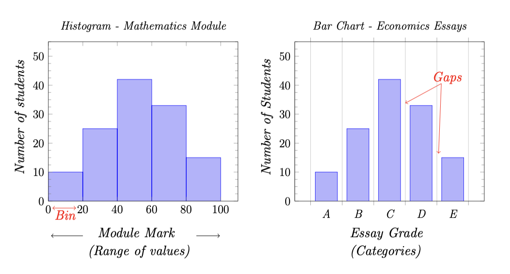

Introduction to Data Visualisation
Introduction
Data visualisation is an important topic within statistics as it helps us to understand data. The visualisations, for example graphs or charts, make it easier to identify patterns and outliers in data sets which could be difficult to spot by looking at the raw data alone. As data visualisation techniques also make it easier to communicate statistical concepts, it is an important topic for a wide range of subject areas, including business and economics, and it is often used to inform decision making in these areas.
In this chapter, we will begin by recollecting data types and we will then consider specific data visualisation techniques.
Learning Outcomes
After studying this module, you should be able to:
- Understand the different data types;
- Explain the difference between a histogram and a bar chart and understand in which situation each one is used;
- Understand bivariate data and scatter plots;
- Interpret scatter plots.
1. Data
What is data?
Data is factual information which can be either quantitative or qualitative. Quantitative data is numerical, which can be either continuous, i.e. take a range of values, or discrete, i.e. take distinct values. An example of continuous data is the height in cm of people and an example of discrete, numerical data is shoe size. Many of us think of data as being numerical values, however this is not always the case. Qualitative data is non-numerical data, which includes non-numerical, categorical data, for example hair colour, but even words and images are classed as qualitative data.
2. Data Visualisation Techniques
Histograms and Bar Charts
A histogram is a diagram consisting of rectangles which provides a visual representation of the distribution of quantitative data. The data are grouped into bins, which divide the range of values into intervals. The intervals are usually of equal length, but they do not need to be. The height of the rectangles represent the frequency, or number of observations, in each bin.
The interactive diagram below can be used to better understand the impact of the number of bins on a histogram - adjust the number of bins in the control bar to visualise the impact on the histogram.
#| '!! shinylive warning !!': |
#| shinylive does not work in self-contained HTML documents.
#| Please set `embed-resources: false` in your metadata.
#| standalone: true
#| viewerHeight: 650
library(shiny)
x <- faithful$waiting
app_ui <- fixedPage(
title = "Waiting Time Between Eruptions for the Old Faithful Geyser in Yellowstone National Park",
h2("Waiting Time Between Eruptions for the Old Faithful Geyser in Yellowstone National Park"),
plotOutput(outputId = "histogram"),
# Sidebar layout with input and output definitions ----
sidebarLayout(
# Sidebar panel for inputs ----
sidebarPanel(
# Input: Slider for the number of bins ----
sliderInput(inputId = "n",
label = "Number of bins:",
min = 1,
max = 50,
value = 30)
),
# Main panel for displaying outputs ----
mainPanel(
# Output: Histogram ----
plotOutput(outputId = "distPlot")
)
)
)
server <- function(input, output, session) {
output$histogram <- renderPlot(
alt = "Histogram of waiting times",
{
hist(
x,
breaks = seq(min(x), max(x),
length.out = input$n + 1
),
freq = TRUE,
col = "blue",
border = "white",
main = "Histogram of waiting times",
xlab = "Waiting time to next eruption [mins]",
ylab = "Frequency"
)
box()
}
)
}
shinyApp(ui = app_ui, server = server)Histograms are not to be confused with bar charts. While histograms are used to represent quantitative data, bar charts are used to represent categorical data. The heights of the rectangular bars in a bar chart represent the number of observations in each category. Gaps between bars in bar charts are often included to clearly differentiate them from histograms.
Example 2.1
In this example, we will consider a histogram and bar chart simultaneously for two different data sets. The first data set contains the module marks (%) for a first-year mathematics module, i.e. continuous data. The second data set contains essay grades (A-E) for a second-year economics module, i.e. categorical data.
The diagram below provides a histogram for the mathematics module results on the left and a bar chart illustrating the essay grades for the economics module on the right. Note the difference in properties between the diagrams, as explained above.

Histograms are also useful for checking the shape of the distribution of data, in particular whether data are symmetrically distributed or skewed. These are key concepts for more advanced statistical techniques, for example checking assumptions for hypothesis testing, therefore we will return to the use of histograms later in the module.
Scatter Plots
Before we meet scatter plots we need to introduce a further data type - this is bivariate data.
Definition 2.2 (Bivariate Data)
We obtain bivariate data when we measure two characteristics, or two variables, on each unit within our data set.
Scatter plots can be used to plot bivariate data and they are particularly useful to help visualise a relationship between the variables. One variable is plotted on the horizontal axis and the other on the vertical axis.
Example 2.3
The data set below contains the annual car insurance cost (in £) and age (in years) of 12 policy holders of a large insurance company.
| Age | 18 | 21 | 22 | 42 | 37 | 57 | 29 | 65 | 51 | 73 | 45 | 33 |
| Insurance Cost | 754 | 653 | 740 | 487 | 399 | 319 | 605 | 345 | 422 | 419 | 350 | 510 |
These data can be represented by the following scatter plot:
As we can see from the scatter plot, there appears to be a negative linear relationship between the variables, i.e. as age increases, annual car insurance costs appear to decrease. Later in the module we will meet a mathematical approach to determine whether such linear relationships exist and to find a line of best fit - this will be part of the linear regression topic.
The concept of linearity is an underlying principle in certain more advanced statistical techniques, for example data reduction methods, and therefore scatter plots will also be useful when we meet these topics.